Linear Regression#
Additional linear-regression visualizations#
Historical Origin: Regression to the Mean#
In the 19th century, Francis Galton studied parent and child heights.
He observed that extreme values tend to be followed by values closer to the average.
He called this pattern regression toward mediocrity (now: regression to the mean).
The term regression originally came from this statistical phenomenon, before modern ML usage.
Francis Galton (via Wikipedia/Wikimedia Commons)
Motivation#
Why linear regression matters in practice.
Goal of Regression#
I own a house in King County.
It has 3 bedrooms, 2 bathrooms, a 10,000 sqft lot, and is 10 km away from Bill Gates’ mansion.
I need a reliable estimate of what it is worth.
How could I estimate the value?#
Use training data to …
… find one similar house …
… and use its value as an estimate.
Use training data to …
… learn a general rule …
… and apply it to estimate value.
I should train a regression model#
216 645 $ base price
+ 20 033 $ for each bedroom
+ 234 314 $ for each bathroom
+ 1 $ for each sqft of lot size
- 14 745 $ for each km distance from Bill Gates' mansion
= xyz $ estimated house price
The term regression (e.g. regression analysis) usually refers to linear regression.
(Don't confuse it with logistic regression.)
Building a model#
Descriptive statistics
Using linear regression for explanation (profiling)\(\rightarrow\) Why is my house worth xyz?
\(\rightarrow\) How can I increase the price?
Inferential statistics
Using linear regression for prediction\(\rightarrow\) How much is my house worth?
Linear Equation#
Linear Equation#
Question: What is the equation of a line?#
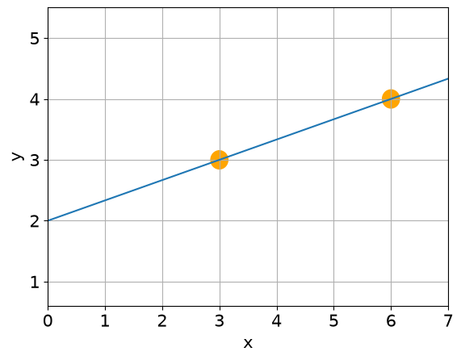
Linear Equation#
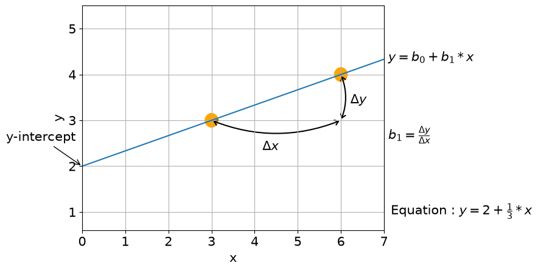
- Intercept (b0): predicted value of y when x = 0.
- Slope (b1): expected change in y when x increases by 1 unit.
Linear Regression#
Linear Regression#
Is variable \(X\) associated with variable \(y\)?
If yes, what is the relationship, and can we use it to predict \(y\)?
- Correlation — measures the strength of a relationship → a number.
- Regression — quantifies the relationship itself → an equation.
What about more than 2 points?#
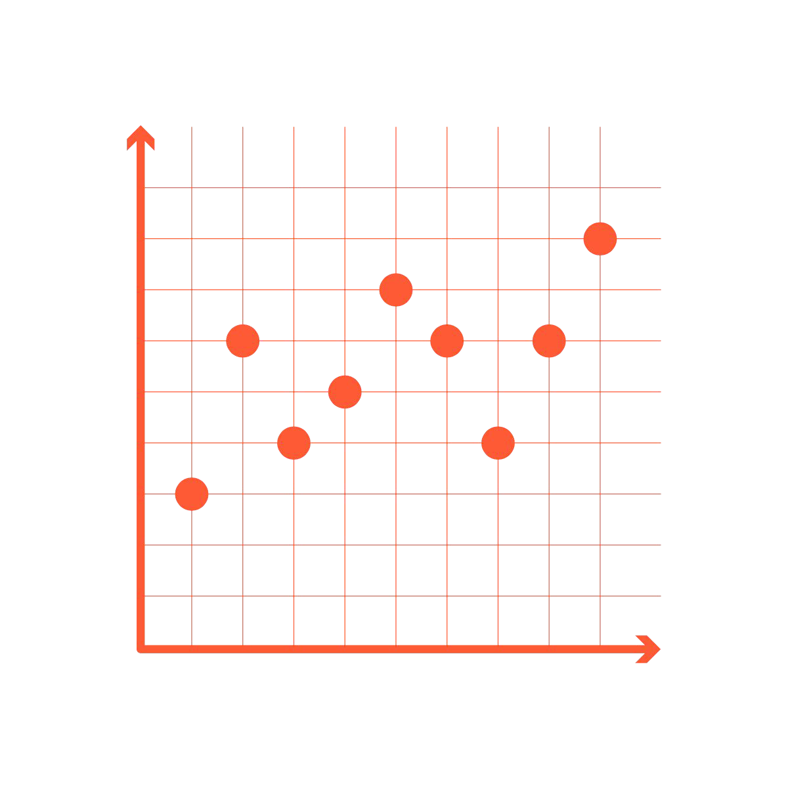
Let’s look at an example#
Two correlated variables:
week of bootcamp, \(x\)
coffee consumption, \(y\)
\(r \approx 0.9\)
\(y = b_{0}+b_{1}\cdot x+e\)
\(\rightarrow\) Find \(b_0\) and \(b_1\)
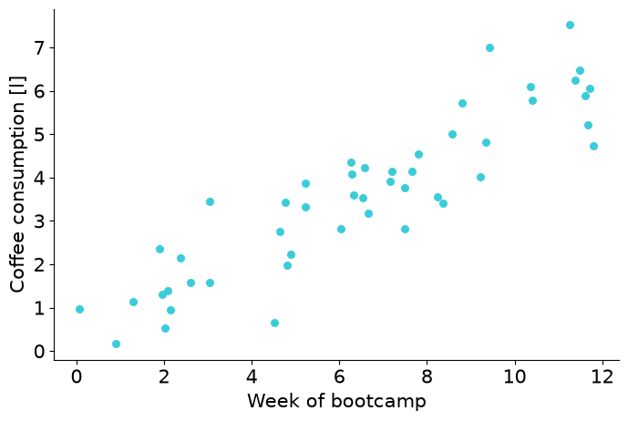
Try two fitted lines. Which one is better?#
Grey: \(\hat{y} = 0.35 + 0.5 \cdot x\)
Blue: \(\hat{y} = 1.65 + 0.3 \cdot x\)
ŷ ("y-hat") denotes an estimated value (line) rather than an observed value (data point).
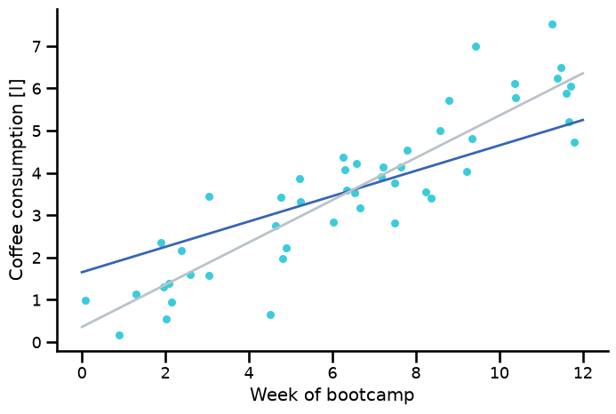
How do we know which line is better?#
Residuals#
For each observation \(i\):
which means:
How to read this:
Real value (what we observed): \(y_i\)
Predicted value from the line: \(\hat{y}_i\)
Prediction error (residual): \(e_i\)
If the residual is positive (\(e_i\) > 0), we predicted too low; if negative (\(e_i\) < 0), we predicted too high.
Residual Example (One Data Point)#
Suppose for one observation:
Observed value: \(y = 4.8\)
Model prediction: \(\hat{y} = 0.3 + 0.5 \cdot 6 = 3.3\)
Residual: $\(e = y - \hat{y} = 4.8 - 3.3 = 1.5\)$
Interpretation:
Positive residual (\(e > 0\)): model underestimates
Negative residual (\(e < 0\)): model overestimates
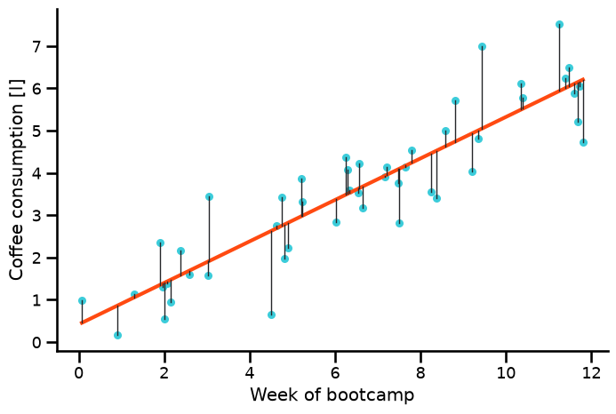
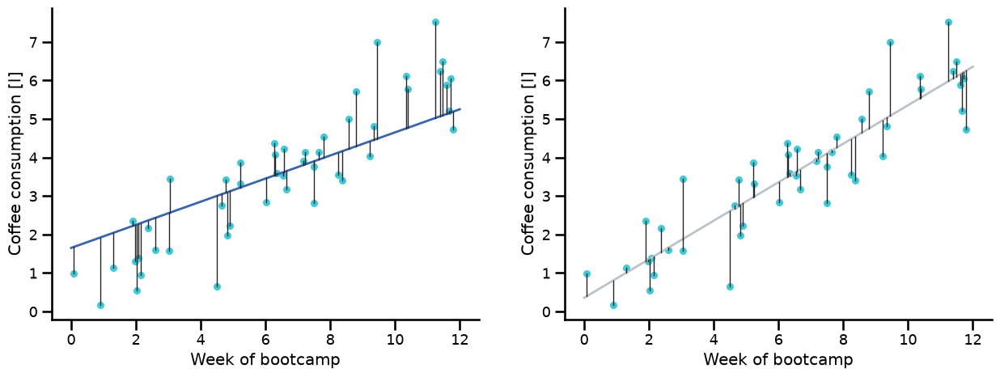
Least Squares Criterion#
To compare fitted lines, we use the sum of squared residuals:
How to read this equation:
Compute error for each point: \(y_i-\hat{y}_i\)
Square each error (no cancellation, large errors count more)
Add all squared errors \(\rightarrow\) this total is \(J\)
Smaller \(J\) means a better-fitting line.
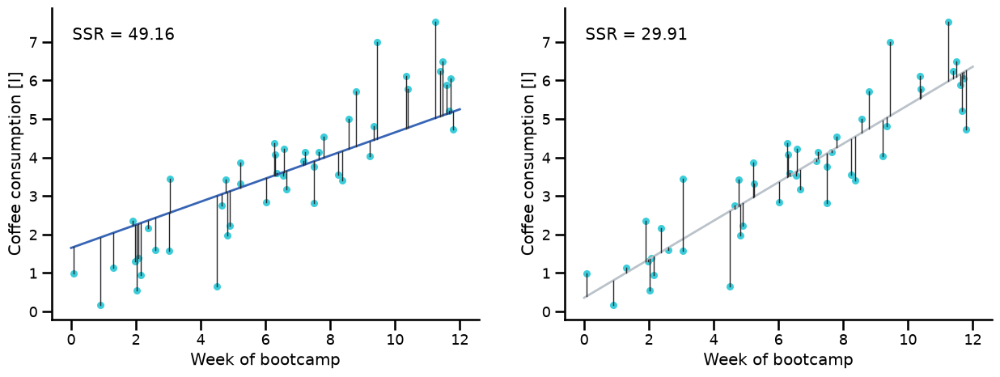
Trying several fitted lines#
By comparing the sum of squared residuals, we can decide which line fits better:
Beginner view:
Each candidate line gets one score: \(J\)
Lower score = line stays closer to points overall.
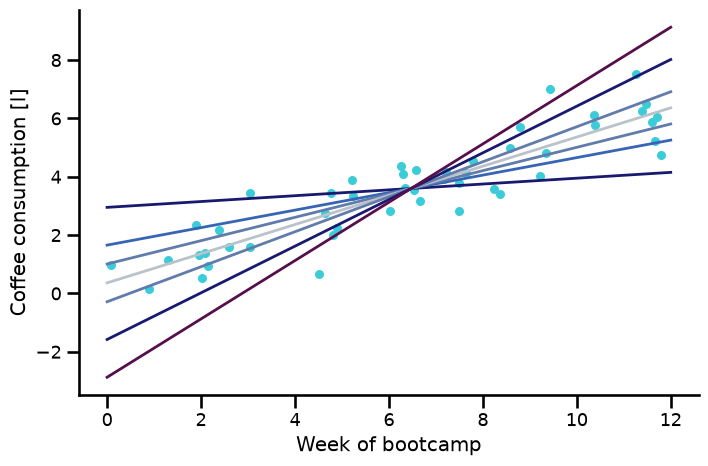
There are infinitely many possible lines#
So how do we solve this?#
Doing this manually is not scalable
We minimize the OLS objective \(J(b_0, b_1)\) with respect to \(b_0\) and \(b_1\)
OLS = Ordinary Least Squares
Plain language:
Try values for \(b_0\) (intercept) and \(b_1\) (slope)
Keep the pair that makes \(J\) as small as possible.
Ordinary Least Squares Regression#
Divide the first equation by \(2n\):
… more algebra gives:
- ∂J/∂bj means how much J changes when one parameter changes.
- Setting derivatives to 0 gives the minimum for this problem.
- Result: formulas for the best b0 and b1.
Useful facts about residuals#
- The second equation means residuals are uncorrelated with the explanatory variable.
- Feel free to verify this on your own fitted models.
Model performance#
Mean of target variable: \(\bar{y}=\frac{1}{n} \sum\limits_{i=1}^{n}y_{i}\)#
Variance of target variable: \(\sigma^2 = \frac{1}{n-1}\sum_i{(y_i-\bar{y})^2}\)#
How to read:
Mean: add all target values and divide by how many values there are.
Variance: average squared distance from the mean (how spread out values are).
Baseline Mean vs Fitted Regression#
A constant mean line is a simple baseline model. A fitted regression line should reduce error compared with this baseline.
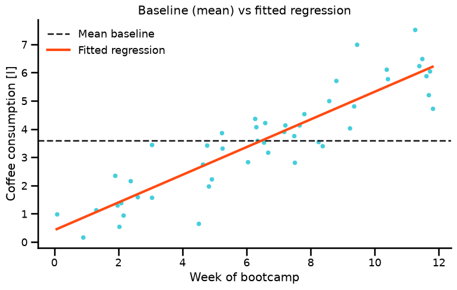
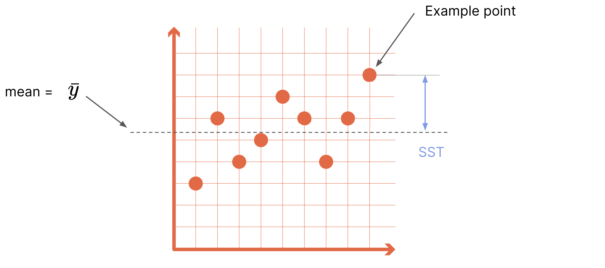
Sum of Squares Decomposition (Variance Analysis)#
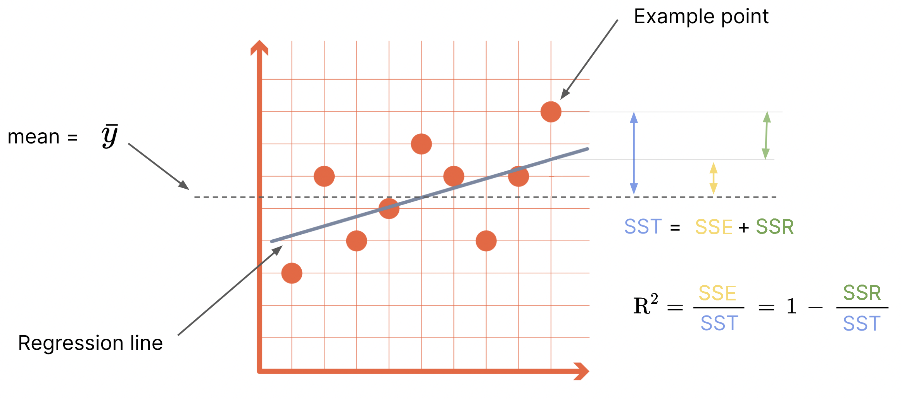
SST = total sum of squares
SSE = explained sum of squares
SSR = residual (unexplained) sum of squares
0 ≤ R2 ≤ 1
R2 = SSE / SST = 1 - SSR / SST
Interpretation: higher R2 means the model explains more of the target variability.
Root Mean Squared Error#
How to compute RMSE:
Compute each residual \((y_i-\hat{y}_i)\)
Square residuals
Average them \(\rightarrow\) MSE
Take square root \(\rightarrow\) RMSE
RMSE is in the same unit as y (easy to interpret).
Lower RMSE means better predictions on average.
Which Metric Answers Which Question?#
RMSE: “How large is the typical prediction error?” Units: same as target variable \(y\)
\(R^2\): “How much variance does the model explain?” Range: 0 to 1 (higher is better)
Adjusted \(R^2\): “Did extra features truly help?” Penalizes adding weak or unnecessary features
Metric Comparison for Two Candidate Lines#
Same dataset, two fitted lines. Use RMSE and \(R^2\) to compare their quality directly.
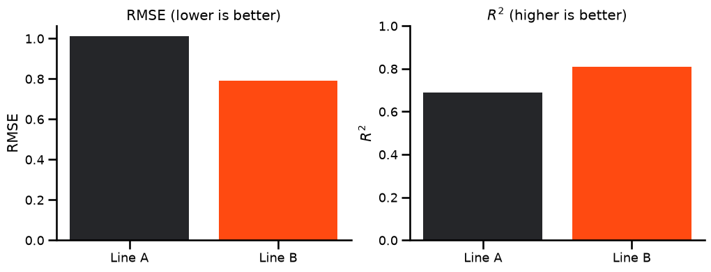
Key Terms#
Key terms: Machine learning#
Variables:#
Target (dependent variable, prediction, response, y)
Feature (independent variable, explanatory/predictive variable, attribute, X)
Observation (row, instance, example, data point)
Model:#
Fitted values (predicted values) - denoted with the hat notation \(\hat{y}\)
Residuals (errors, e) - difference between reality and model
Least squares (method for fitting a regression)
Coefficients, weights (here: slope, intercept)
But I want to use more than one feature#
Multiple Linear Regression#
Multiple regression#
For one feature: \(y=b_0+b_1x+e\). For many features: \(y=Xb+e\).
Where y, b, e are vectors, and X is a matrix.
\(n\) = number of observations, \(m\) = number of features.
\(x_{obs,feature} = x_{row,col} = x_{n,m}\)
\(y\) and \(X\) are known (observed data). \(b\) and \(e\) are unknown.
Think of \(Xb\) as: for each row, multiply features by weights and add them up.
Multiple regression means multiple independent variables. Multivariate regression means multiple dependent variables.
Normal Equation#
The optimal values for \(b\) (\(b_0\), \(b_1\), \(...\), \(b_m\)) are often found numerically (e.g., gradient descent). For linear regression, they can also be computed analytically with the normal equation:
Predictions#
Once \(b\) is known, we can make predictions: $\( \hat{y} = b_0 + b_1x_1 + ... + b_mx_m \)$
Or in matrix notation:
\(X\) needs the same feature format as above, but can have a different number of rows (e.g., 1). The error term \(e\) remains unknown, but is minimized during fitting.
Multiple Regression — Evaluation Metrics#
Root Mean Squared Error (RMSE)#
Typical prediction error size in the original unit of \(y\).
Lower RMSE is better.
Adjusted R-squared (\(adj.\ R^2\)):#
\(n\): sample size, \(p\): number of features.
Starts from \(R^2\), then penalizes unnecessary features.
Overview of Linear Regression Terms#
\(R\): Pearson correlation coefficient — in the interval [-1, 1]
\(R^2\): Coefficient of determination — fraction of variance in \(y\) explained by the model
\(MSE\): mean squared error — average squared prediction error
\(RMSE\): root mean squared error — square root of MSE in the original unit of \(y\)
\(SST\), \(SSE\), \(SSR\): sum of squares — total, explained, residual
\(\sigma^2\): variance of a variable — dispersion around the mean
- Residuals tell you point-by-point errors.
- RMSE tells you average error size.
- R2 tells you how much variance your model explains.
References#
There are also many detailed explanations in the exercise repositories.
Practical Statistics for Data Science - Peter Bruce & Andrew Bruce
Econometric Methods with Applications in Business and Economics - Christiaan Heij, Paul de Boer, Philip Hans Franses, Teun Kloek, Herman K. van Dijk
Difference between \(R^2\) and adjusted \(R^2\)
Some more math for those who want to know how to calculate \(b_1\)#
\(-2 \Sigma x_i(y_i - b_0 - b_1x_i) = 0 \)
we know that \(b_0 = \bar{y} - b_1 \bar{x}\)
\(-2 \Sigma x_i(y_i - \bar{y} + b_1 \bar{x} - b_1x_i) = 0 \)
\(\Sigma(x_iy_i - x_i \bar{y} + b_1(x_i \bar{x} - x_ix_i)) = 0\)
\(\Sigma(x_iy_i - 2x_i \bar{y} + \bar{x}\bar{y} + b_1(-\bar{x}\bar{x} + 2x_i \bar{x} - x_ix_i)) = 0 \hspace{1cm}|\hspace{1cm} \Sigma x_i = \Sigma \bar{x} \)
\(\Sigma(x_iy_i - x_i \bar{y} - \bar{x}y_i + \bar{x}\bar{y} + b_1(-\bar{x}\bar{x} + 2x_i \bar{x} - x_ix_i)) = 0 \hspace{1cm}|\hspace{1cm} \Sigma x_i \bar{y}= \Sigma \bar{x}y_i = n \bar{x}\bar{y} \)
\(\Sigma(y_i - \bar{y})(x_i - \bar{x}) - b_1 \Sigma(x_i - \bar{x})^2 = 0 \)
\(b_1 = \frac{\Sigma(y_i - \bar{y})(x_i - \bar{x})}{\Sigma(x_i - \bar{x})^2} \)